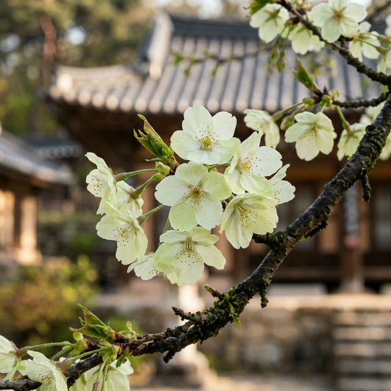
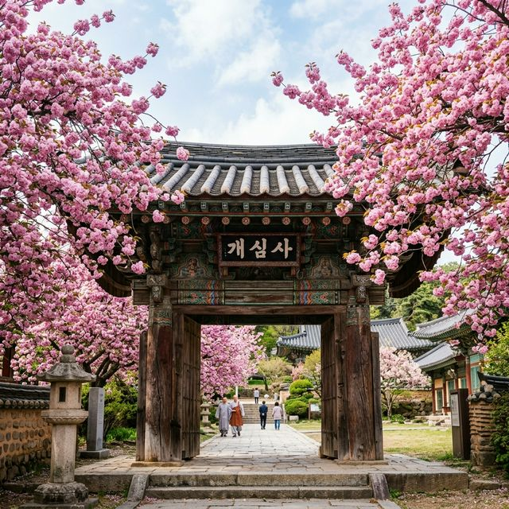
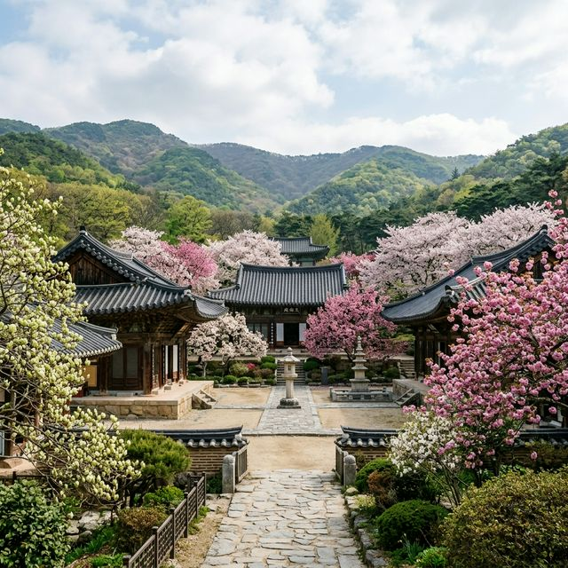

전국의 왕벚꽃이 꽃비를 뿌리며 엔딩을 맞이할 때, 충남 서산의 가야산 자락에 자리 잡은 개심사(開心寺)는 비로소 봄의 본궤도에 오릅니다. 이름 그대로 '마음을 여는 사찰'인 이곳은 매년 4월 중순이면 전국의 사진작가들과 여행객들의 발길이 끊이지 않는 봄꽃의 성지인데요. 일반 벚꽃보다 2주 정도 늦게 피는 겹벚꽃과 함께, 오직 개심사에서만 만날 수 있는 신비스러운 청벚꽃의 자태는 보는 이로 하여금 감탄을 자아내게 합니다. 오늘은 미리 알고 가면 200% 더 감동받는 서산 개심사 벚꽃 여행 전략을 소개해 드립니다.

개심사의 벚꽃은 일반적인 벚꽃과는 차원이 다른 화려함을 자랑합니다. 이곳의 상징인 청벚꽃은 하얀 바탕에 옅은 초록색이 상큼하게 감도는 꽃잎으로, 국내에서 자생하는 개채수가 매우 적어 그 희귀성이 높습니다. 대웅전 앞 마당에서 만나는 청벚꽃 나무 아래 서면 마치 요정의 숲에 온 듯한 착각마저 듭니다. 또한, 청벚꽃 주변을 감싸고 있는 왕겹벚꽃은 꽃잎이 여러 겹으로 겹쳐져 마치 핑크색 솜사탕을 나무에 매달아 놓은 듯한 풍성함을 보여줍니다. 진분홍, 연분홍, 하양, 연녹색이 어우러진 개심사의 봄은 그야말로 천상의 화원이라 해도 과언이 아닙니다.
개심사는 지대가 높고 산세가 깊어 평지보다 꽃이 피는 시기가 늦습니다. 2026년 기상 데이터를 분석해 볼 때, 4월 15일경 첫 꽃망울을 터뜨려 4월 18일(토) ~ 4월 20일(월) 사이에 절정에 이를 것으로 예상됩니다. 겹벚꽃은 일반 벚꽃보다 개화 기간이 일주일 정도로 길어 조금 더 여유 있게 감상할 수 있다는 점이 매력적입니다. 하지만 청벚꽃의 연녹색 느낌은 만개 직후가 가장 선명하므로, 이번 주말(4.18~19)을 타겟으로 여행 계획을 세우시는 것이 가장 좋습니다.

개심사 곳곳이 포토존이지만, 특히 놓쳐서는 안 될 핵심 명소를 정리해 드립니다.
| 포인터 이름 | 추천 시간대 | 촬영 특징 |
|---|---|---|
| 대웅전 청벚꽃 | 오전 9시 ~ 10시 | 순광에서 연녹색이 가장 잘 살아남 |
| 명부전 왕겹벚꽃 | 정오 무렵 | 꽃잎의 입체감이 가장 풍부해짐 |
| 심검당 배롱나무길 | 오후 4시 이후 | 부드러운 사광으로 감성적인 연출 |
눈이 즐거웠다면 입도 즐거워야 할 시간입니다. 서산에 왔다면 꼭 맛봐야 할 음식으로 게국지를 추천합니다. 서산 지역의 향토 음식인 게국지는 꽃게와 겉절이 김치를 함께 끓여내어 시원하고 구수한 국물 맛이 일품입니다. 나른한 봄날 입맛을 돋우기에 이보다 더 좋은 보양식은 없겠죠? 또한, 개심사 입구 상점가에서 파는 직접 캐온 산나물전과 시원한 동동주 한 잔은 사찰 여행의 낭만을 더해줍니다.

개심사 한곳만 보기 아쉽다면 서산의 다른 명소들과 연계해 보세요.
분홍색 일색인 일반적인 벚꽃 놀이에 조금 식상해졌다면, 오직 서산에서만 볼 수 있는 청벚꽃의 은은한 매력에 빠져보시기 바랍니다. 2026년 4월, 가장 늦게 피어 가장 화려하게 피어나는 개심사의 봄은 여러분의 일상에 잊지 못할 선명한 색채를 입혀줄 것입니다. 이번 4월 셋째 주말, 마음을 활짝 여는 개심사 벚꽃 여행을 통해 진정한 봄의 절정을 만끽해 보시길 바랍니다.